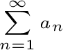
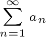

For an infinite series

Nth Term Divergence Test:
If , the series diverges.
Integral Test:
If f is a positive, continuous, decreasing function and f(n) = an, then
and have the same convergence/divergence status.
Direct Comparison Test:
If an eventually becomes less than or equal to bn for all n...
Limit Comparison Test:
If and are positive and if is positive and finite, a and b have the same convergence/divergence status.
are positive and if is positive and finite, a and b have the same convergence/divergence status.
Ratio Test:
For a infinite series with positive terms, if the limit of the ratio of the next term to the current term, or
is:
Root Test:
If is ... follow the same conditions as for the ratio test.

Nth Term Divergence Test:
If , the series diverges.
Integral Test:
If f is a positive, continuous, decreasing function and f(n) = an, then
and have the same convergence/divergence status.
Direct Comparison Test:
If an eventually becomes less than or equal to bn for all n...
- If b converges, then so does a
- If a diverges, then so does b
Limit Comparison Test:
If and
are positive and if is positive and finite, a and b have the same convergence/divergence status.Ratio Test:
For a infinite series with positive terms, if the limit of the ratio of the next term to the current term, or
is:
- Greater than 1 --> the series is divergent
- Equal to 1 --> the test is inconclusive
- Less than 1 --> the series is convergent
Root Test:
If is ... follow the same conditions as for the ratio test.